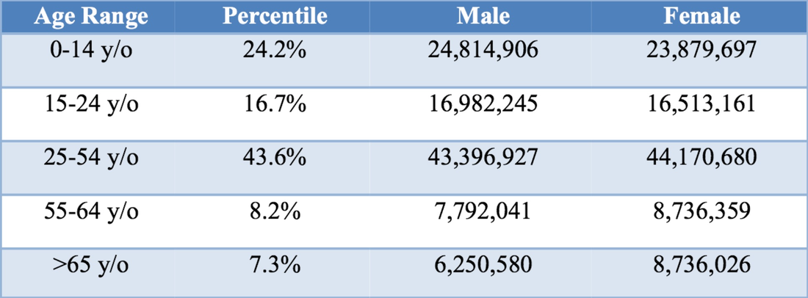
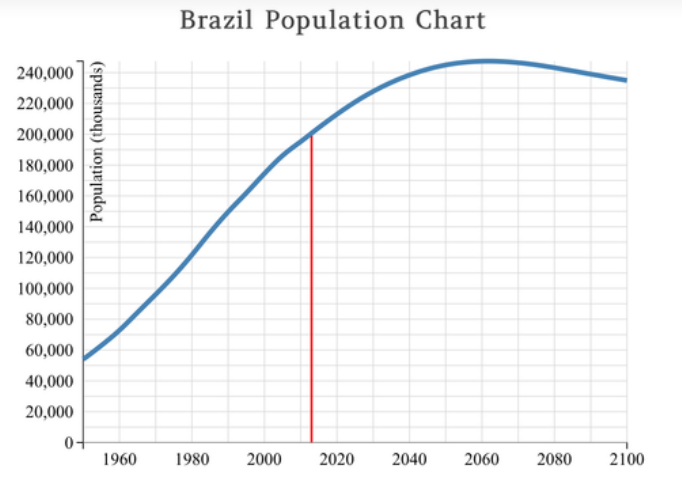

General Statistics
Brazil’s population currently sits at roughly 214 million individuals. Of these individuals,
- 48% are white
- 43% are mixed race
- 7% are black,
- the remaining 2% being of other different races
Currently, the country is facing an increased birthrate and a sharp overall climb in its population as a result.
Age Range
Due to the increased birthrate in the recent decade, the proportion of the younger population when compared to the middle aged to older populations has seen a sharp rise. The largest age group, as shown with the graph below, is the range of 25-54 years. The spike in birthrate can also be seen in the difference between 15 to 24 year olds, and the 0-14 year old population. The second largest population percentile is the latter age group.
Growth
Brazil’s population has been on a steady rise since the 1960’s, and future forecasts predict that this trend will continue. A combination of increased life expectancy (currently the average life expectancy is 74 years) and the increased birth rate seen above, will be the main contributors. Other small factors will include expats and those who seek to retire in Brazil, due to favorable exchange rates that the country offers.
